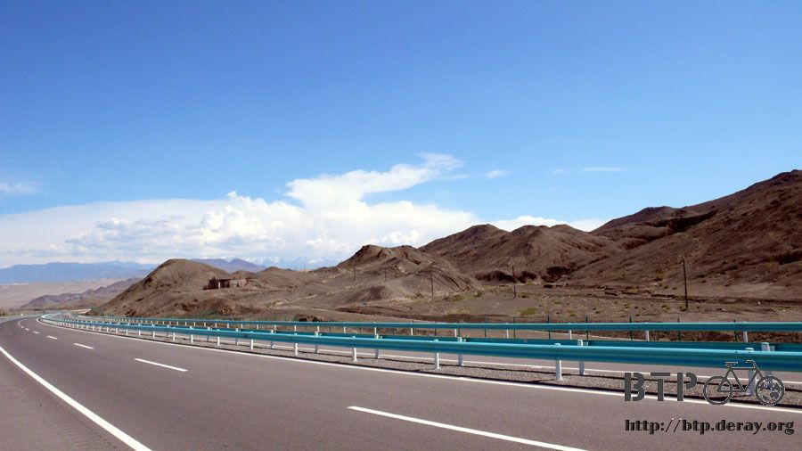

Fleck＆Jacquin
因為中國的包子尺寸都比較小，我都當成小籠包吃，早餐店的客人都三個、五個的叫來吃，我一口氣都是叫整籠的吃。
結果這一間早餐店的包子特別大，就是正常的包子尺寸，今天一大早就吃了十個大肉包，配上一碗鹹的豆腐腦，整個人很撐。
頂著圓滾滾的肚子，很想回旅館再睡一下，實在吃太多了，今天的午餐可以省起來不用吃也沒關係。
才剛出發踩第一下踏板，右腳就很賤的去踢到鏈條的保護器，之前它只是有點鬆脫，現在又被我這麼一踢，就這樣斷掉了。

還好不是什麼很要緊的零件，主要就是為了保護鏈條而已，拿出工具把它整個拆掉，這樣重量會輕一點吧~_~
離開精河之後，就比較少人煙，但是跟之前的戈壁灘相比，這裡還是充滿著生機，即使是荒地，也有著綠意。

一路上都是沿著山脈的末端在騎車，左邊就是高聳的山，山頂的雪很神奇就是不會融化，明明是這麼樣炎熱的天。
雲朵雖然不少，可是都不在頭頂上，而是盤踞在山頭，讓山看起來只像個剪影一樣。
被太陽曬的很熱的時候，就往山那邊多看幾眼，感覺就會涼快一些～

出發兩個多小時後抵達托托加油站，加油站是我的好朋友。
冰涼的水洗臉－免費；舒服的陰影乘涼－免費；暢快到底的可樂－三塊；一個小時的悠閒時光－無價。

脫掉鞋子和襪子，坐在加油機器旁邊，午餐就是喝可樂配著幾包餅乾，肚子裡的包子還沒消化完呢。
吃喝完畢之後，不知不覺又睡著了，加油站的生意冷清也是一個好處，就算我睡在機器的旁邊也不會被打擾。
休息到下午兩點，繼續沿著山腳騎車，相當幸運的，路上都是順風，騎了一整個逆風的中國，希望接下來的哈薩克整個都是順風。
有水草的地方畜牧的人家就很多，白色的小山羊咩咩叫的很大聲，看到牠們彷彿就看到了今天的晚餐一樣(流口水)。

離開托托加油站一個小時之後，在對向車道發現兩個也是騎自行車在旅行的人，同時互相發現對方，
因為這邊的國道蓋的像是高速公路一樣，馬路被護欄給分隔開來，所以我只好把小多靠在護欄上面，爬過護欄去和他們說哈嘍！
因為他們一看就知道肯定不是中國人，所以我就用英文問他們是從哪裡來的？
一男一女的旅行者，是已經退休的夫妻，法國人，從哈薩克開始騎車，目標是西藏，今天是他們旅行的第十天。
爸爸叫做Jacquin，媽媽叫做Fleck，他們今年已經六十二歲了，還是很老當益壯的靠自己的力量做這麼艱難的旅行。

爸爸完全不會說英文，媽媽還會說一點點，再配上我的爛法文，還是可以聊得很開心。
他們問我的第一個問題是，往我騎來的方向，還要再走多遠才有地方可以吃喝呢？
看來他們兩個人都已經累壞了，好加再前面不遠的地方就是我剛剛休息的加油站，把這個好消息跟他們講，他們都很開心。
這兩輛分別是Fleck和Jacquin的自行車，他們的行李比我還要多，雖然是兩個人旅行，但是互相分擔行李之後，東西一點也少不到哪裡去。
而且更艱辛的，他們這十天來幾乎每天都露營，偶爾才會去可以淋浴的旅館住宿，真是太累人了。

媽媽很愛漂亮，手上還有塗指甲油，但是經歷這幾天的旅行，光是看那剝落的樣子就可以感覺到旅行的疲憊。
他們住在法國的東邊，我說我前兩年有騎自行車環法國一圈，有經過你們住的地方呢，而且我現在又要再騎去法國了:D
媽媽帶著的筆記本很特殊，不單單向我一樣只是紀錄今天的事情，裡面更放了很多張他們家小孫子的照片，
翻到這一頁的時候，媽媽的表情就變得很開心，然後用手指逗照片裡的小孩子笑。
明明都已經是六十多歲，可以退休在法國享清福，就算要去西藏好了，也可以用輕鬆一點的方式，但是他們還是選擇了這麼不容易的單車旅行。
爸爸和媽媽的單車都很可愛，把手的部分都有裝布娃娃，爸爸的車裝的是長頸鹿，媽媽則是裝了兩隻小白熊。

而且他們的車子都有裝後照鏡，但是看到水壺裡面都已經空的連一滴水都沒有，難怪他們一看到我就問哪邊有地方可以吃喝。
我跑去小多那邊拿出一個滿滿的水壺說要分給他們，但是他們說自己還有足夠的水可以喝，要我留著喝就好了。
爸爸帶著像是哈巴狗那種有著大耳朵的帽子，可以讓太陽曬不到脖子和臉頰，帽子脫掉之後底下是光頭唷～

爸爸雖然不會說英文，但是透過媽媽的翻譯還是能夠聊得起來，他們都說這麼熱的天我怎麼還穿外套以及穿長褲呢？
我這才注意到他們都是穿著襯衫，而且袖子還捲起來，兩隻手臂都已經曬成深咖啡色，實在是受苦了。
太陽越大才要把自己包起來呀，我拉開外套、捲起袖子露出沒有被曬黑的手臂，他們好像可以了解我穿這麼多的理由了。
真開心可以遇到同樣是在騎單車旅行的人，互留下對方的Email，等有網路的時候再將照片寄給對方。
臨走的時候媽媽給了我一個大擁抱，還熱情的在我的臉頰上親了一下，讓我有點不好意思。
之後跟爸爸也來一個祝福和分別的擁抱，我滿懷歉意的說『不好意思，她是你的老婆』~_~
從遇到Fleck和Jacquin的地方再走四十多公里就會到今天的目的地，精河。
最後這一段路，我在騎車的時候心裡想的都是這兩個可愛的爸爸跟媽媽不知道騎到加油站了沒有？

國道都裝上護欄和圍籬的關係，車輛和人根本就離不開馬路，本來沿著馬路建成的小村落，就這麼落寞了。
不論是餐廳還是旅館，修車廠還是商店，全部都是只剩下招牌，但是房舍已經殘破。

抓到兇手了～就是這樣的施工方式，先把路面割一條隙縫，然後再塗上熱呼呼的柏油，我之前就是因為來不及閃這個柏油，
讓輪胎給沾到這黏答答的東西，過了一天冷卻掉之後總算才不會繼續黏著石頭騎車，我花好一番工夫才把柏油從輪胎上給刮下來。
快要進入精河之前有一個『蒙包』的告示牌，轉進去看了一下，好像是旅遊的地方，可是又不用收票。


在裡面的山上有幾根五顏六色的尖塔柱子，和石頭堆成的小山，插了幾根樹枝然後上面綁了數不清的布條、絲帶，這個就是蒙包了。

它的由來是這樣的，在最一開始的時候，只是一個什麼都沒有的地方，然後有一個人走到這裡，累了就坐在這邊休息，
順手就拿幾個石頭疊在一起，然後插一根樹枝，綁一條布條，就繼續他的旅行。
接著又有其他的人也走到這邊，累了剛好就在這裡休息，看到已經有前人堆了小石頭，也就跟著去撿了幾顆堆在一起，然後在同一根樹枝上綁布條。
就這樣，每個經過這個地方，又剛好在這裡休息的人，都堆幾顆石頭，綁上布條，樹枝綁滿了，就再插一根新的樹枝。
經年累月之後就變成這樣子了～
離開蒙包再騎一個小時，精河到啦～明天離開精河可是要連續爬山路上坡的，今天要好好的休息個夠才行。
離開國道騎到市區裡面，也是熱鬧的讓我不敢相信剛剛自己經過的地方都那麼荒涼，怎麼這裡可以有個城市存在？

今天住的旅館找在一個晚上會有夜市的地方，到時候就能夠大快朵頤一番，住宿費很便宜，省下來的錢就吃的豐盛一點吧！
晚餐點了好久沒吃的砂鍋料理，三鮮口味的雞肉砂鍋，再配上一瓶當地生產的烏蘇啤酒。
光這樣吃好像少了點什麼，又點了五份下酒的烤羊肉串。今天下午看到很多羊的時候，滿腦子想的都是你們啦～

每天吃晚餐的時候真是一天中最快樂的時光*^^*
這就是晚上十點半的天空，還這麼樣的明亮，在這邊媽媽都不能跟小孩說『玩到天黑就要回家喔！』不然小孩都會玩到半夜才回去。

好亮的天空總是讓我搞不清楚現在到底是幾點，或是該用什麼時區比較適當，等到哈薩克再來調手錶吧。
繼續閱讀：6.19 孤寂的小鎮
中國-人民幣－ 1：4.3 台幣
6.18 |
總計：34元 |
早餐包子、豆腐腦5元、午餐可樂3元、冰棒兩支1元、網吧一小時2元、住店10元、晚餐雞肉砂鍋5元、烏蘇啤酒3元、烤羊肉串5元 |
|